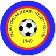
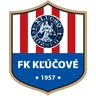

OŠK Podolie
VI. liga Sever, 11. miesto zo 14. V klube hrajú 3 tímy, od prípravky po áčko.
Najbližší zápas
FK Košeca – Podolie
Zápasy
Výsledky
Tabuľka
| # | Tím | Z | V | R | P | Skóre | B |
|---|---|---|---|---|---|---|---|
| 1 | TJ Tatran Ladce | 12 | 9 | 3 | 0 | 45:7 | 30 |
| 2 | 12 | 10 | 0 | 2 | 37:11 | 30 | |
| 3 | 12 | 7 | 2 | 3 | 37:18 | 23 | |
| 4 | 12 | 6 | 3 | 3 | 18:13 | 21 | |
| 5 | 12 | 6 | 2 | 4 | 24:19 | 20 | |
| 6 |  TJ Štart Tuchyňa | 12 | 6 | 1 | 5 | 29:24 | 19 |
| 7 | 12 | 5 | 3 | 4 | 20:25 | 18 | |
| 8 | 12 | 5 | 2 | 5 | 25:14 | 17 | |
| 9 |  FK Kľúčové | 12 | 4 | 1 | 7 | 26:30 | 13 |
| 10 | 12 | 4 | 0 | 8 | 16:40 | 12 | |
| 11 | 12 | 3 | 1 | 8 | 23:41 | 10 | |
| 12 | 12 | 2 | 1 | 9 | 21:43 | 7 | |
| 13 | 12 | 1 | 1 | 10 | 11:47 | 4 | |
| 14 | 0 | 0 | 0 | 0 | 0:0 | 0 |
Nábor
Futbal od 5 rokov, zadarmo.
Dievčatá aj chlapci od 5 rokov môžu kedykoľvek prísť vyskúšať, aké je trénovať a hrať za OŠK Podolie. Zadarmo, bez vstupných aj mesačných poplatkov.
Rok 2025
- Áčko
- Po jeseni 2025 prezimovalo na 8. mieste VI. ligy Sever. Najlepším hráčom jesene bol Denis Novotný, vybrali ho aj do zostavy jesene celej súťaže.
- Odchovanci
- Do áčka sa zapracúvajú hráči, ktorí v Podolí začínali alebo odohrali mládežnícke kategórie: Vrba, Hutta, Novotný a brankár Ohrablo, vekom ešte dorastenec.
- Mládež
- Prípravka U11 skončila v ročníku 2024/25 šiesta z 13 tímov a na Memoriáli Daniela Šima v Bošáci tretia po výhre 9:1 v zápase o 3. miesto.
- Hody
- Letná príprava sa začína tradičným hodovým zápasom v Očkove. V roku 2025 sa skončil 5:5.